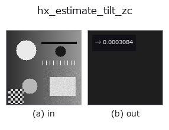

halcon_ext op• Datenarten: image → feature
• Aufruf: fullseye.apply(img, "hx_estimate_tilt_zc", a=0.5, b=0.5) (das 2-D-Modell ist ein Bild plus zwei skalare Regler a,b∈[0,1])
• HALCON-Äquivalent: estimate_tilt_zc (Bedeutung und Parameter sind in der HALCON-Referenz nachzulesen)

*Die Abbildung ist die tatsächliche Ausgabe auf einer synthetischen 128×128-Eingabe. Links Eingabe, rechts Ausgabe. Punktwolken als Draufsicht-Streudiagramm (Helligkeit = z), 1-D-Reihen als Linie, Volumen als Maximum-Projektion entlang z, Videos als mittleres Bild, komplexe Bilder als Betrag; Rückgabewerte, die kein Bild ergeben, werden als Werte gezeigt.*
*Regler a ändert die Ausgabe nicht (gemessen: identisch bei 0,1 / 0,5 / 0,9).*
*Regler b ändert die Ausgabe nicht (gemessen: identisch bei 0,1 / 0,5 / 0,9).*
Zheng-Chellappa: schätzt den Tilt aus der mittleren Richtung des normierten Gradienten (unabhängig vom lokalen Kontrast).
Teilt den Sobel-Gradienten (Ex, Ey) in jedem Pixel durch seinen Betrag hypot(Ex, Ey) + 1e-9 zu Einheitsvektoren, mittelt diese und gibt tilt = arctan2(<Ey/|E|>, <Ex/|E|>), per (tilt / 2π) mod 1 auf [0,1) abgebildet, als np.float64 zurück (die tilt-Schätzung nach Zheng-Chellappa).
• a, b werden nicht verwendet.
• Dieselbe Winkelkonvention wie hx_estimate_tilt_lr (0 ist die +Spaltenrichtung, 0.25 die +Zeilenrichtung).
Da jedes Pixel nur mit seiner Richtung beiträgt, wird es weniger von starken Kanten oder hellen Bereichen gezogen. Andererseits hat auch in ebenen Bereichen mit nahezu 0 Gradient die Richtung des Rauschens (durch 1e-9 geteilt) gleichermaßen 1 Stimme, daher verschwimmt die Schätzung bei Bildern mit großem ebenem Hintergrund. Ein vorgeschaltetes gauss_filter, das die Rauschgradienten verringert, stabilisiert sie.
• Leitfaden zur Familie gallery2d_halcon_ext
• Katalog der Beispieldaten (Download-URLs / Lizenzen) — 2-D nutzt skimage.data (BSD/Public Domain) plus synthetische Bilder, 3-D nennt Download-URLs echter Datenquellen (Stanford, PDS, …).
• Herkunft und Literatur der Operatoren — die Quellen der Forschung/Verfahren, auf denen diese Operatorfamilie beruht.
• Der kanonische Algorithmus (Autor, Jahr) und seine Anwendungen stehen im Familienleitfaden oben.
Das Programm unten ist nachweislich lauffähig (gleiche Eingabe wie die Abbildung). In der Studio-Hilfe wird dieser Block zu Schaltflächen, die es sofort laden und ausführen.
hx_estimate_tilt_zc 0.50 0.50
▸ Diese Pipeline laden · Laden & ausführen
• gallery2d_halcon_ext — py -3.11 examples/gallery2d_halcon_ext.py
feature als Eingabe)halcon_ext)hx_gen_circle · hx_gen_ellipse · hx_gen_rectangle2 · hx_gen_checker_region · hx_gen_grid_region · hx_gabor · hx_fit_surface1 · hx_fit_surface2
*Provenance: ops.py — 2D Operator-Registry. Diese Notiz wird von tools/opdocs.py md erzeugt (nicht von Hand bearbeiten).*
© 2026 Kazufumi Furuse — Fullseye operator documentation. Licensed under Apache-2.0.